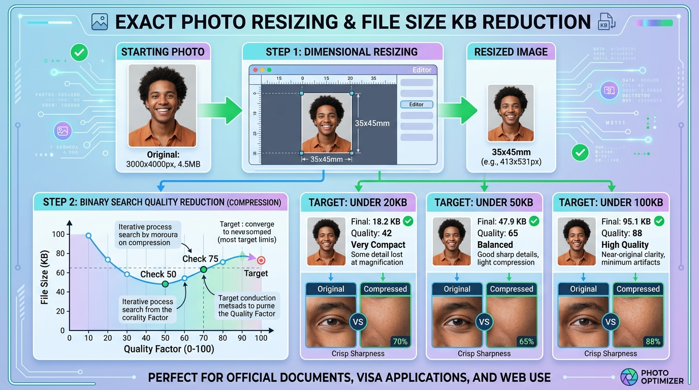

How to Resize Photos to Exact Dimensions & Reduce File Size to 20KB, 50KB, 100KB
Executive Takeaways
- Binary Search Compression Precision: Instead of guessing quality sliders, our engine executes a 7-iteration binary search to find the highest possible JPEG quality strictly below your target byte limit (e.g. 19.8 KB for a 20 KB rule).
- Real-World Dimension Standards: Switch effortlessly between physical units (35x45mm Schengen/UK, 2x2" US Visa, 50x50mm) and digital pixel dimensions at official 300 DPI print quality.
- Zero Cloud Uploads: Portrait photos and government ID cards are processed 100% inside your local device RAM. Your biometric data is never stored on external servers.

Step-by-Step Photo Resizing & KB Reduction Tutorial
100% In-BrowserUpload Your Portrait Photo
Select any JPG, PNG, or WebP photo on the Photo Resizer workspace. Original dimensions and metadata are loaded instantly in RAM.
Select Dimension Preset or Custom Units
Click preset buttons like 35 × 45 mm (Passport) or 2 × 2 in (US Visa), or choose custom units (mm, cm, inch, px) with aspect ratio lock enabled.
Choose Target KB Limit & Download
Select ≤ 20 KB (government portals), ≤ 50 KB (civil exams), or ≤ 100 KB. The engine calculates the optimum quality and provides an instant download.
1. The Frustration of Government & Visa Portal Upload Limits
Whether submitting a visa application to the US Department of State (DS-160), applying for civil service examinations (such as UPSC, SSC, or state recruitment boards), or updating national identity cards (like NADRA CNIC), applicants routinely face strict, unforgiving upload errors:
- "File size must be strictly between 20KB and 50KB."
- "Image dimensions must be exactly 35mm wide by 45mm high at 300 DPI."
- "Uploaded file exceeds the maximum 100KB limit."
Most basic image editing tools only offer a generic "Quality 1-100" slider. Users are forced to guess, export, check file properties, find it is still 52KB, guess again, re-export, and repeat. LocalDoc eliminates guesswork by mathematically calculating the exact compression curve in real-time.
2. Understanding Binary Search Quality Compression
JPEG compression uses discrete cosine transform (DCT) quantization matrices controlled by a quality parameter $Q \in [0.0, 1.0]$. The relationship between $Q$ and the output byte size is nonlinear and depends heavily on image entropy (color detail, facial features, and background noise).
Our client-side engine in Photo Resizer & KB Reducer implements an iterative binary search algorithm:
- Initial bounds are set: $Q_{\min} = 0.05$ and $Q_{\max} = 0.98$.
- At each iteration, the midpoint $Q_{\text{mid}} = \frac{Q_{\min} + Q_{\max}}{2}$ is evaluated on canvas in-memory.
- If the generated blob exceeds your target byte limit (e.g. 50 KB = 51,200 bytes), $Q_{\max}$ is adjusted downward to $Q_{\text{mid}}$.
- If the blob fits safely under the limit, $Q_{\min}$ is raised to $Q_{\text{mid}}$ to maximize visual sharpness.
- Within 7 rapid iterations (~80 milliseconds), the algorithm converges to the maximum possible quality that fits under your limit.
If you need to compile two-sided ID cards or produce a multi-copy printable 4x6 sheet, visit our companion tool Biometric ID & Passport Photo Studio.
3. Standard Consular & Examination Dimension Reference
| Application / Authority | Dimensions | Resolution @ 300 DPI | Target File Size |
|---|---|---|---|
| EU Schengen & UK Visa | 35 × 45 mm | 413 × 531 px | ≤ 100 KB |
| US Passport & DS-160 Visa | 2 × 2 inches (51 × 51 mm) | 600 × 600 px | ≤ 240 KB |
| Government Jobs & UPSC/SSC | 3.5 × 4.5 cm | 413 × 531 px | 10 KB – 50 KB |
| State Board Signature Uploads | 3.5 × 1.5 cm | 413 × 177 px | 10 KB – 20 KB |
| NADRA Smart National ID Card | 350 × 450 px | 350 × 450 px | ≤ 50 KB |
4. Frequently Asked Questions
How do I convert millimeters to pixels for printing?
The standard formula is: $\text{Pixels} = \frac{\text{Millimeters}}{25.4} \times \text{DPI}$. At official consular 300 DPI print quality, a 35mm width equals $\frac{35}{25.4} \times 300 \approx 413$ pixels, and a 45mm height equals $\frac{45}{25.4} \times 300 \approx 531$ pixels. Our tool handles this conversion automatically.
Will compressing to 20KB make my face blurry?
No, because our engine crops the dimensions to the exact pixel standard first before compressing. This ensures that the high pixel density is maintained without unnecessary empty canvas data, preserving sharp facial features even under 20KB.
Can I change the photo background to pure white or light blue?
Yes. In the control panel of the Photo Resizer, you can select between Original, White, or Light Blue background presets with a single click.